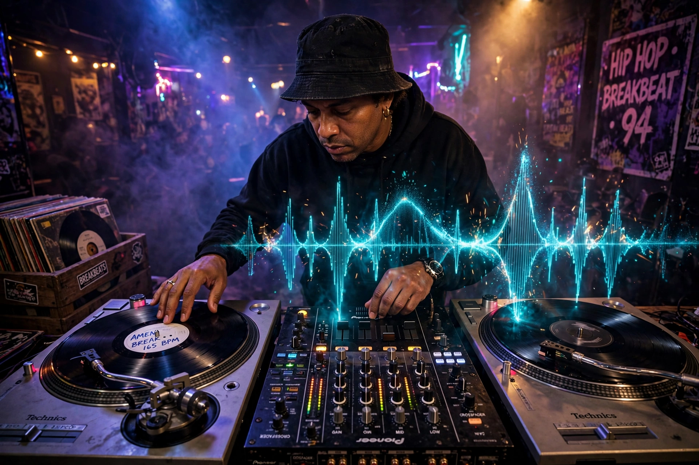

Breakbeat is a broad type of electronic music that tends to use drum breaks sampled from early recordings of funk, jazz, and R&B. Breakbeats have been used in styles such as Florida breaks, big beat, hip hop, drum and bass, jungle, and breakcore.

In the 1970s Bronx, DJ Kool Herc looped the percussive "break" of funk records using two turntables, laying foundations for hip hop and b-boy culture. The "Amen break" from The Winstons' "Amen, Brother" (1969) became the most sampled break.
Syncopated, non-straightened rhythms, typically 130-150 BPM in modern electronic forms, as opposed to house's four-on-the-floor. See Sampling, Drum and bass, Hip hop.
Nu skool breaks, Florida breaks, big beat (The Prodigy, Fatboy Slim), breakbeat hardcore, and broken beat.